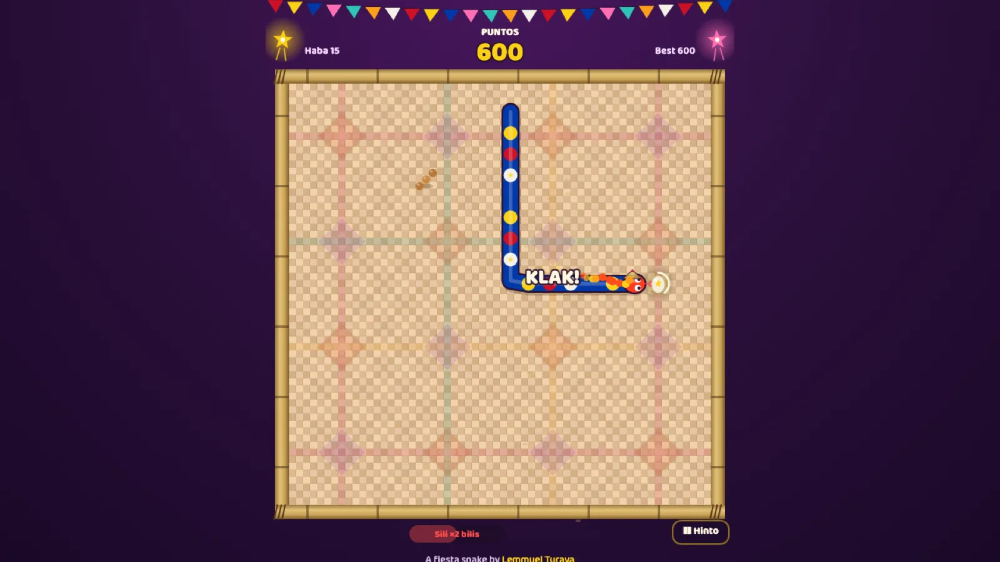

Ahas sa Fiesta
Classic snake at a Pinoy fiesta

ArcadeKeyboard · SwipeFree, in the browser
Play Ahas sa FiestaAbout the game
Ahas is the Filipino word for snake, and this one has come to the fiesta hungry. It is painted in the blue, red and yellow of the Philippine flag, wears a little salakot (wide farmer's hat), and slithers across a giant banig, a woven sleeping mat, laid on a stage in the middle of the town plaza. Food stalls under striped awnings line both sides, and an old church stands at the far end.
The rules are the ones everyone learned on an old phone: eat, grow longer, and do not run into anything, including yourself. What changes is everything around it. The food is street food, the fiesta keeps moving from one famous Philippine festival to the next, and the tinikling poles make sure you can never get too comfortable.
How to play
Steer the snake to each piece of food. Fishball and kwek-kwek (quail eggs in orange batter) give 10 points and one segment. Turon (fried banana roll) and banana cue give 15 and two segments. Some treats only stay for a short time and do something special:
- Balut: 50 points, and every point counts double for 8 seconds.
- Sili (chili): you go faster for 6 seconds, with double points.
- Halo-halo: everything slows down for 6 seconds. Brain freeze.
- Anting-anting (amulet): it saves you from one crash.
Eat again within two and a half seconds and you start a sunod-sunod (one after another) combo, up to four times the points. After six meals the tinikling begins. A row or column flashes red, the bamboo poles tap twice, then clap shut. If your head is in that line, the game ends. If only your body is, the poles snip off your tail and you lose points for each piece.
Every eight meals you move to a new barangay, and the plaza is redressed for a new festival with new colors on the mat. Each one adds banga (clay pots) to steer around, and from the second barangay a tandang (rooster) struts across the mat and pecks at your food before you can reach it. Do not run into either.
- Keyboard: arrow keys or WASD steer. Two quick turns are both remembered, so tight corners work. P or Esc pauses, M toggles sound.
- Phone and tablet: swipe to turn, or use the on-screen D-pad.
- Controller: a gamepad can steer too.
There are three modes. In Klasiko the bamboo frame is a wall. In Walang Pader (no walls) you slip out one side and come back in the other. Araw-araw (every day) gives everyone the same board for the day. Ten medals and a top five for each mode give you something to chase.
Tips
- When the poles tap, look at which line is red and get your head out of it first. Losing a bit of tail is much better than losing the game.
- Grab the balut before the sili. Double points from the balut make the sili's double points even sweeter while they overlap.
- Halo-halo is a gift when the snake is long. Use the slow seconds to untangle yourself.
- Keep the snake along the edges in Klasiko and leave the middle open, so there is always room to turn.
- The rooster is after your food. If it is closer than you, go for something else instead of racing it.
Fiestas, festivals and the tinikling
Nearly every town in the Philippines celebrates a fiesta, and some have grown into festivals known across the country, which the game visits one by one. Pahiyas in Lucban, Quezon, is a harvest feast where houses are covered in colorful kiping, leaf-shaped rice wafers. Sinulog in Cebu and Ati-Atihan in Kalibo, Aklan, both honor the Santo Niño (the Child Jesus) with street dancing and drums. Panagbenga in Baguio is a flower festival with floats and garlands. MassKara in Bacolod is known for its giant smiling masks, and Kadayawan in Davao gives thanks for the harvest of fruit and flowers.
The tinikling is one of the best-known Philippine folk dances. Two people crouching on the floor clap a pair of long bamboo poles together and apart in rhythm, while dancers hop in and out between them without getting caught. It is said to imitate the tikling bird stepping nimbly between grass stems and bamboo traps in the rice fields. Your snake has to do the same thing, only without legs.